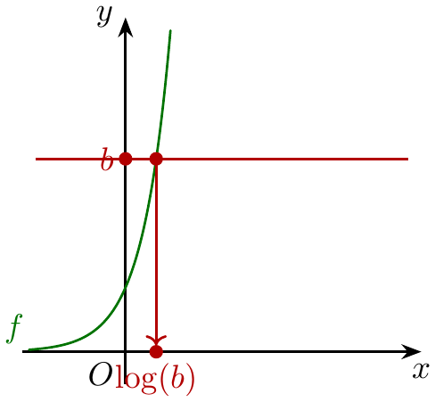
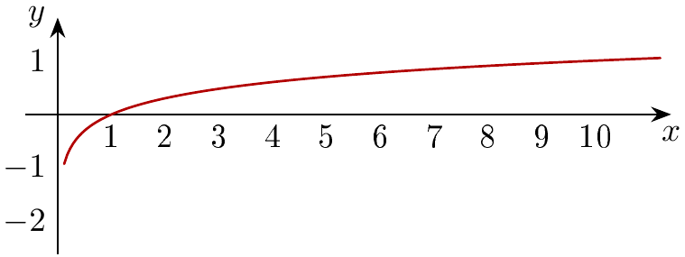

Chapitre VI : Fonction logarithme décimal
Terminale STMG · Chapitre 6 — Logarithme décimal · cours de Frederik de Peyrelongue
En 1614, un mathématicien écossais, John Napier (1550 ; 1617), plus connu sous le nom francisé de Neper, publie « Mirifici logarithmorum canonis descriptio ».
Dans cet ouvrage, qui est la finalité d'un travail de $20$ ans, Neper présente un outil permettant de simplifier les calculs opératoires : le logarithme.
Neper construit le mot à partir des mots grecs « logos » (logique) et arithmos (nombre).
Toutefois cet outil ne trouvera son essor qu'après la mort de Neper. Les mathématiciens anglais Henri Briggs (1561 ; 1630) et William Oughtred (1574 ; 1660) reprennent et prolongent les travaux de Neper. Les mathématiciens de l'époque établissent alors des tables de logarithmes de plus en plus précises.
L'intérêt d'établir ces tables logarithmiques est de permettre de substituer une multiplication par une addition (paragraphe II). Ceci peut paraître dérisoire aujourd'hui, mais il faut comprendre qu'à cette époque, les calculatrices n'existent évidemment pas, les nombres décimaux ne sont pas d'usage courant et les opérations posées telles que nous les utilisons ne sont pas encore connues. Et pourtant l'astronomie, la navigation ou le commerce demandent d'effectuer des opérations de plus en plus complexes.
I. Définition de la fonction logarithme décimal
1.1 Définition
Soit la fonction $f$ définie sur $\R$ par $f(x)=10^{x}$.
L'équation $10^{x}=b$, avec $b>0$, admet une unique solution dans $\R$. Cette solution se note $\log b$.

On appelle logarithme décimal d'un réel strictement positif $b$, l'unique solution de l'équation $10^{x}=b$. On la note $\log b$.
La fonction logarithme décimal, notée $\log$, est la fonction :
Conséquences.
- Pour $b>0$ : $10^{x}=b$ revient à écrire $x=\log b$.
- $\log 10^{x}=x$.
- Pour $x>0$ : $10^{\log x}=x$.
1.2 Sens de variation

La fonction logarithme décimal $x\longmapsto \log x$ est croissante sur $\left]0\,;+\infty\right[$.
Valeurs particulières : $\log 1=0$ ; $\log 10=1$ ; $\log\dfrac{1}{10}=-1$
II. Propriétés de la fonction logarithme décimal
2.1 Propriétés algébriques
- Pour $a>0$ et $b>0$ : $\log(a\times b)=\log(a)+\log(b)$.
- Pour $a>0$ et $n\in\N$ : $\log\left(a^{n}\right)=n\log(a)$.
- Pour $b>0$ : $\log\left(\dfrac{1}{b}\right)=-\log(b)$.
- Pour $a>0$ et $b>0$ : $\log\left(\dfrac{a}{b}\right)=\log(a)-\log(b)$.
Simplifier les expressions suivantes :
Correction.
Remarque. La première formule permet de transformer un produit en somme.
2.2 Équations et inéquations
Pour tout $a>0$ et $b>0$ :
Application. Résoudre dans $\R$ l'équation $7^{x}=5$.
Pour tout $a>0$ et $b>0$ :
(la fonction logarithme décimal est croissante, donc elle conserve l'ordre)
Application. Résoudre dans $\left]0\,;+\infty\right[$ l'inéquation $x^{7}<3$.
L'ensemble solution est $\left]0\,;3^{\frac{1}{7}}\right[$.
Remarque. $3^{\frac{1}{7}}$ se lit « racine septième de $3$ » et peut se noter $\sqrt[7]{3}$.
$8$ augmentations successives de $t$ % correspondent à une augmentation globale de $30$ %. Donner une valeur approchée du taux moyen $t$.
Correction. Le problème revient à résoudre dans $\left]0\,;+\infty\right[$ l'équation :
Une augmentation globale de $30$ % correspond à $8$ augmentations successives d'environ $3{,}3$ %.
On retrouve la propriété suivante, directement établie dans le chapitre « Fonctions exponentielles » :